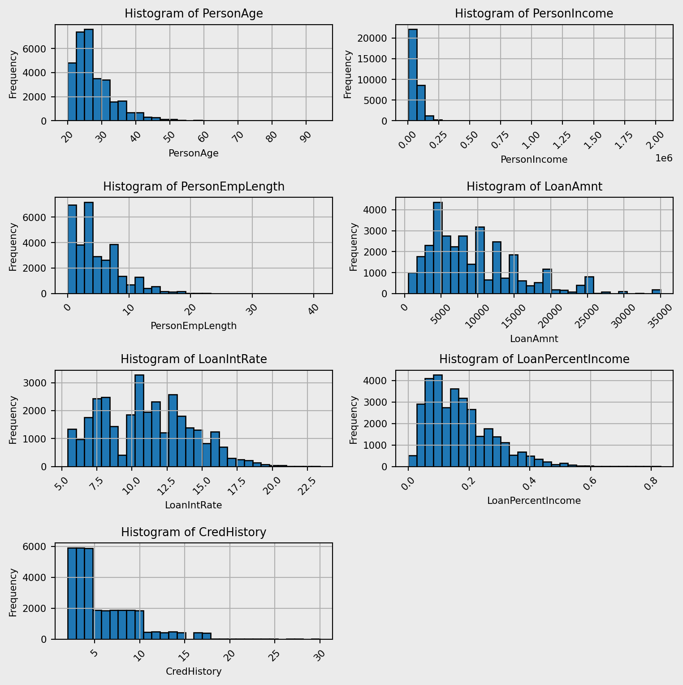
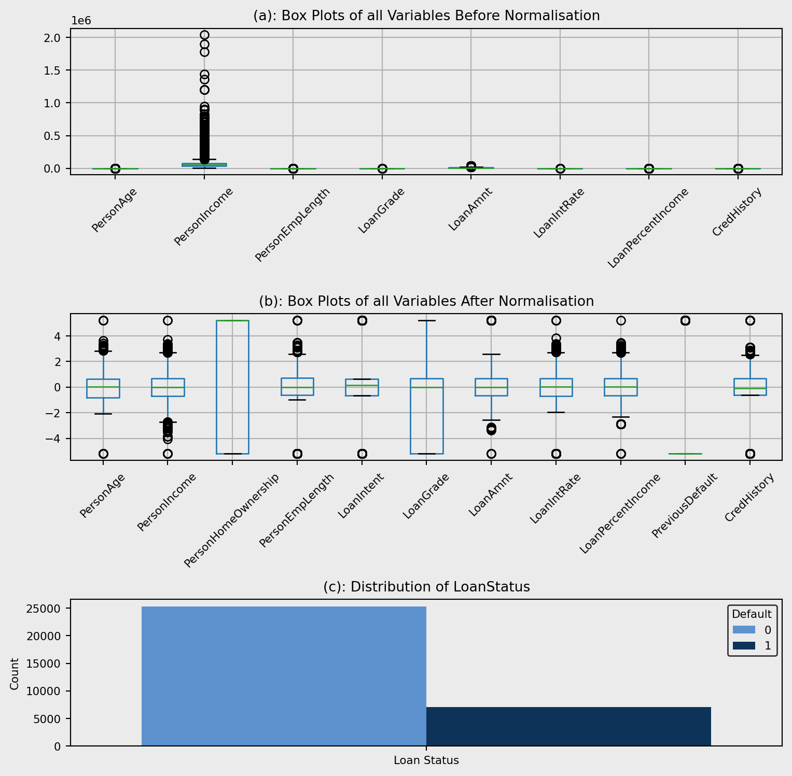
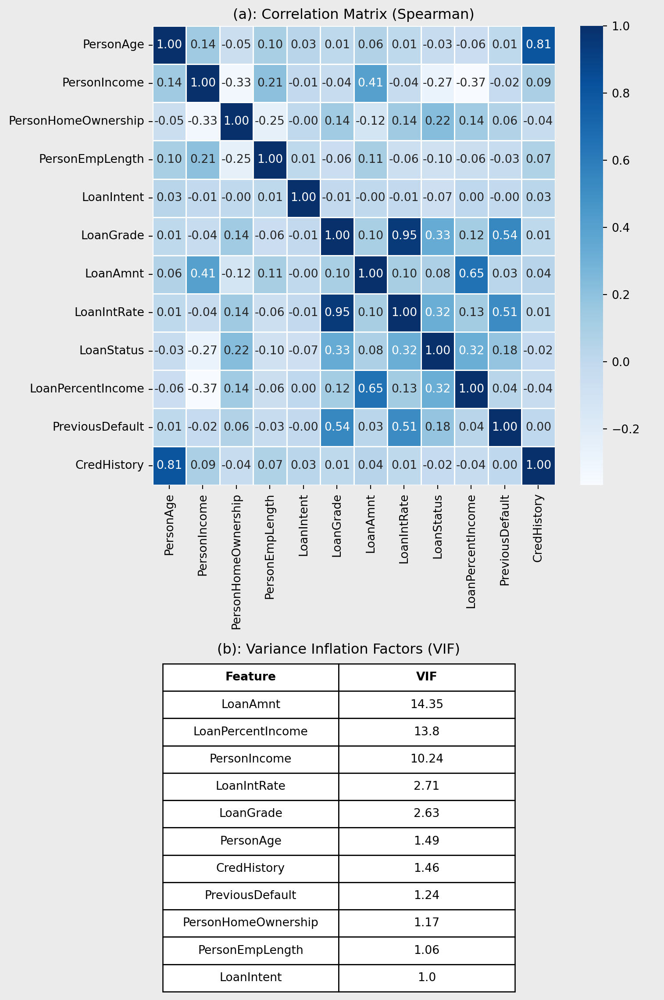
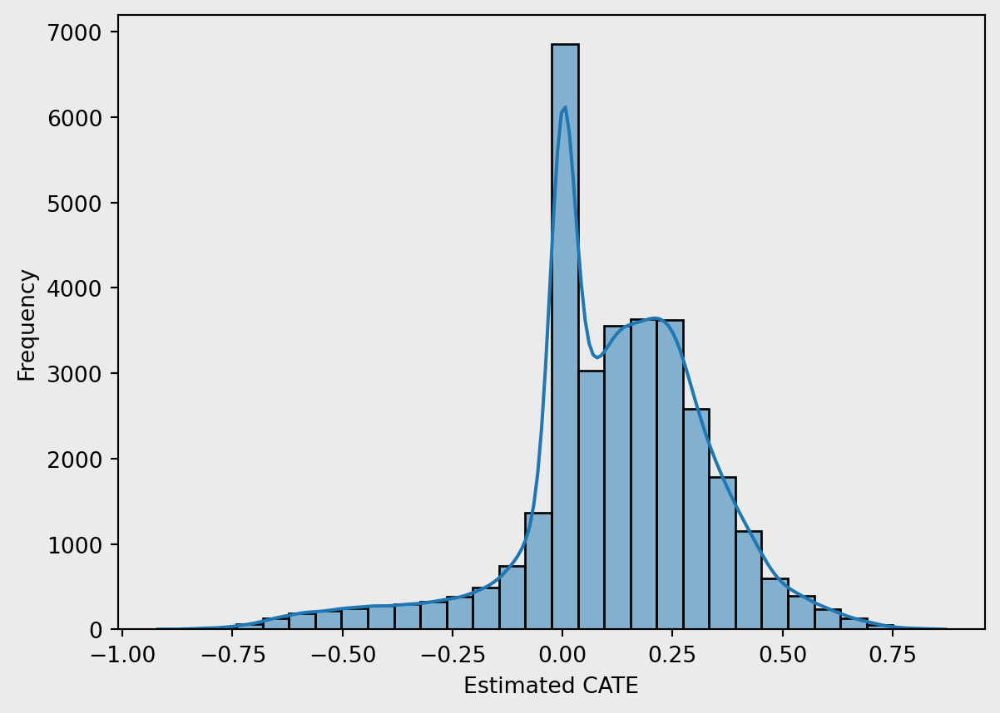
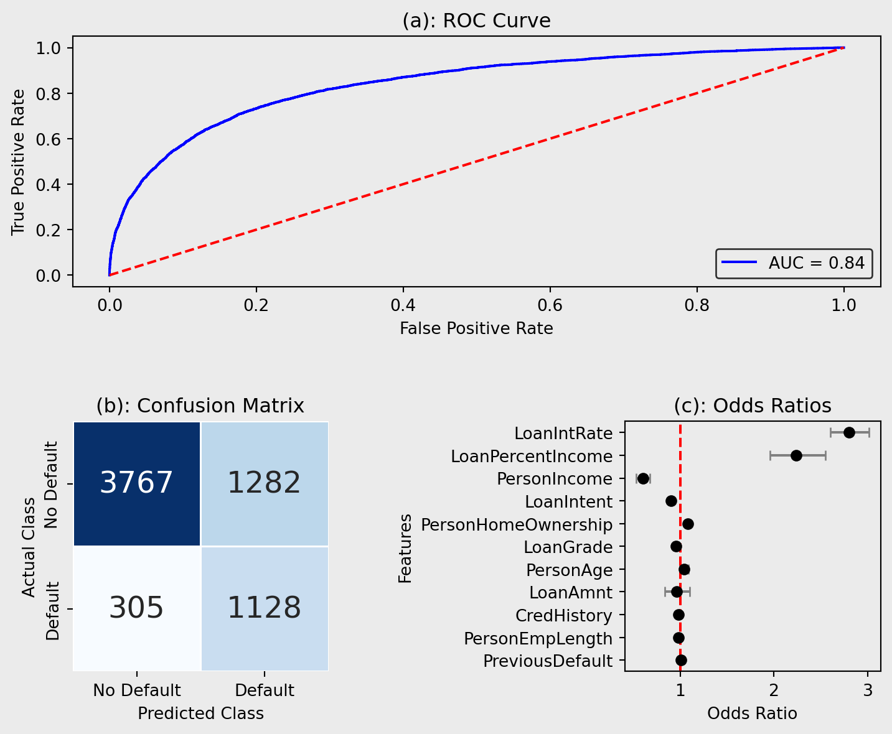
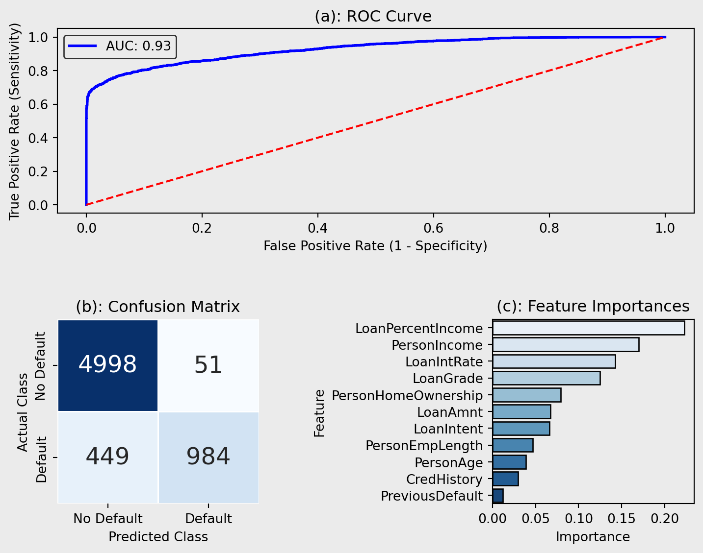
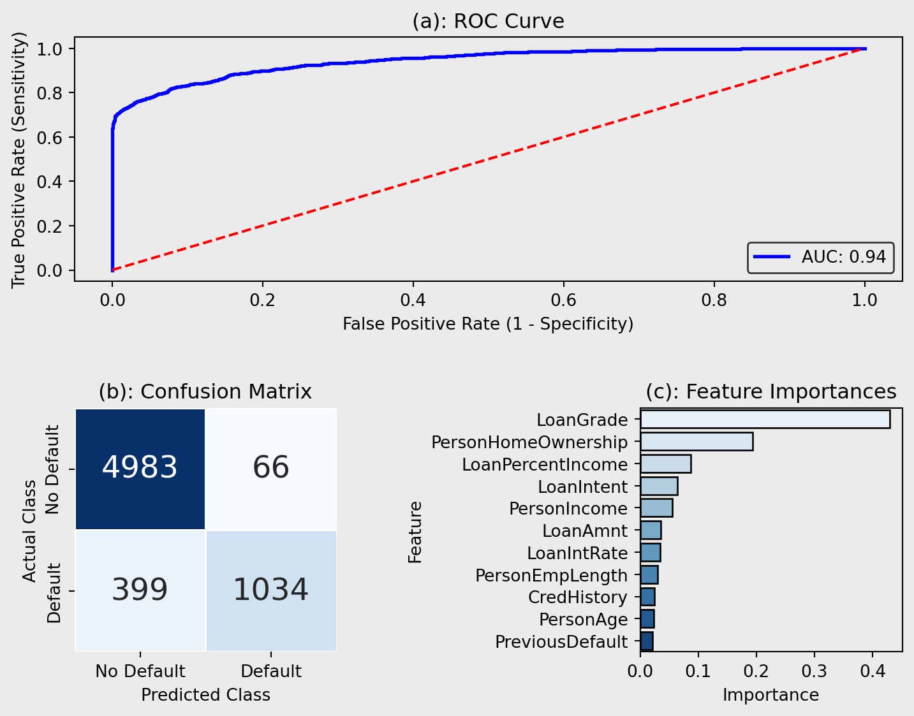
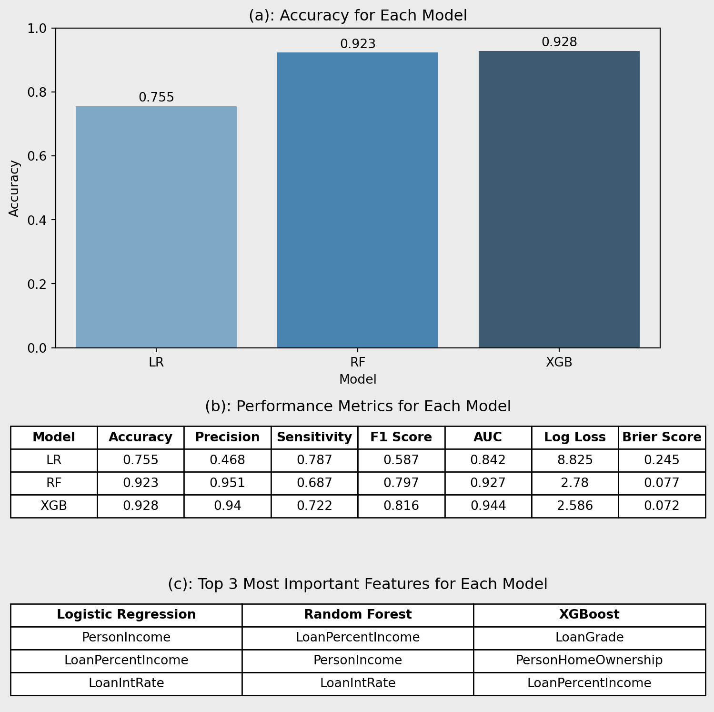

| Variable | Data Type | Definition | Missing Values | N | Mean | Median | SD | Min | Max |
|---|---|---|---|---|---|---|---|---|---|
| PersonAge | int64 | Age of the borrower | 0 | 32409 | 27.7 | 26.0 | 6.2 | 20.0 | 94.0 |
| PersonIncome | int64 | Income of the borrower | 0 | 32409 | 65894.3 | 55000.0 | 52517.9 | 4000.0 | 2039784.0 |
| PersonHomeOwnership | object | Home ownership of the borrower | 0 | 32409 | Categorical variable | ||||
| PersonEmpLength | float64 | Employment length of the borrower | 887 | 32409 | 4.8 | 4.0 | 4.0 | 0.0 | 41.0 |
| LoanIntent | object | Intention of the loan | 0 | 32409 | Categorical variable | ||||
| LoanGrade | object | Loan grade | 0 | 32409 | Categorical variable | ||||
| LoanAmnt | int64 | Amount of the loan (USD) | 0 | 32409 | 9592.5 | 8000.0 | 6320.9 | 500.0 | 35000.0 |
| LoanIntRate | float64 | Loan interest rate | 3095 | 32409 | 11.0 | 11.0 | 3.2 | 5.4 | 23.4 |
| LoanStatus | int64 | Loan status (0 – not defaulted, 1 – defaulted) | 0 | 32409 | Categorical variable | ||||
| LoanPercentIncome | float64 | Loan percentage of income | 0 | 32409 | 0.2 | 0.2 | 0.1 | 0.0 | 0.8 |
| PreviousDefault | object | If the borrower has defaulted before | 0 | 32409 | Categorical variable | ||||
| CredHistory | int64 | Credit history length | 0 | 32409 | 5.8 | 4.0 | 4.1 | 2.0 | 30.0 |


1. Why Predicting Defaults Matters More Than Ever
Access to credit is a key factor supporting economic development, allowing households and businesses to invest, grow, and manage consumption. However, borrower default remains a constant challenge for financial institutions, often resulting in significant financial losses. Accurate credit risk prediction is essential for reducing exposure and improving lending decisions. Recent advances in machine learning (ML) offer powerful alternatives to traditional scoring models, with ensemble methods such as Random Forest (RF) and Extreme Gradient Boosting (XGBoost) showing strong performance in financial classification tasks (Yang, 2024).
This project compares the performance of Logistic Regression (LR), RF, and XGBoost in predicting loan defaults using five key classification metrics. Accuracy, measuring the overall proportion of correct predictions, while precision evaluates how many predicted defaulters were correctly identified. Recall reflects the proportion of actual defaulters detected by the model. F1-score is the mean of precision and recall, providing a balance between the two, and AUC (Area Under the ROC Curve) assesses the model’s ability to rank defaulters above non-defaulters (Saito & Rehmsmeier, 2015).
Given the financial sector’s growing need for alternative data and algorithmic decision-making, this work has practical relevance. Enhanced risk models can reduce default rates, minimise financial losses, and support more inclusive access to credit. The project aims to contribute to ongoing research in predictive analytics and the development of robust, data-driven lending practices.
2. Exploring Risk: From Patterns to Causal Effects
Prior to conducting the analysis of credit risk, we need to understand and organise the data. For this analysis we will be using a loan defaulting dataset from Kaggle (reference), consisting of 12 variables/columns and 32580 observations, illustrated in Table 1.
2.1 Preparing the Data and Descriptive Statistics
Table 1 displays missing values and summary statistics for all variables. Only PersonEmpLength and LoanIntRate had missing values, with 887 and 3095, respectively. To maintain sample size and address skew, median imputation was used for PersonEmpLength, while LoanIntRate, highly correlated with LoanGrade (see Figure 5), was imputed using regression. Duplicate rows were also removed, reducing the dataset to 32415 observations. Additionally, implausible maximum values for PersonAge and PersonEmpLength (144 and 123) were treated as errors and removed. After filtering, the adjusted maximum values were 94 for PersonAge and 41 for PersonEmpLength, ensuring data integrity.
2.2 Distribution Analysis

The histograms shown in Figure 1 illustrate the distributions for each numeric variable. All of the variables shown have positively skewed distributions. This is due to individuals with low age likely to have low values in each of these variables. PersonAge, PersonEmpLength and CredHistory have very similar distributions, indicating a potential correlation between these variables.

Figure 2(a) shows that the data isn’t scaled proportionally, therefore we need to apply a scaling technique. Due to the skewness of all the variables quantile transformation was deployed, normalised data is shown in Figure 2 (b). The plot shows outliers, however there is no reason for these to be errors meaning they will not be removed. For example, the reason for outliers in PersonIncome is due to people earning considerably more than average.
Figure 2(c) demonstrates the distribution of LoanStatus within the dataset. This can cause large impacts on the ML models deployed in the analysis, leading to skewed performance metrics as the models will predict the majority class with high accuracy but the minority class with lower accuracy. To circumvent this issue, I implemented class weighting within my ML models.
2.3 Correlation and Multicollinearity Analysis

Figure 3(a) shows a correlation plot quantifying the relationships between the variables and the target LoanStatus. LoanGrade and LoanIntRate have a high correlation coefficient (r = 0.95), indicating that they are highly correlated. Also, a similar relationship is shown between PersonAge and CredHistory (r = 0.81). These patterns are expected—older borrowers tend to have longer credit histories, and higher loan grades are typically associated with higher interest rates. While such correlations suggest potential multicollinearity, further assessment using variance inflation factors (VIF) is required.
VIF values for all the variables are shown in Figure 3(b). In contrast to Figure 3(a), LoanGrade, LoanIntRate, PersonAge, and CredHistory have low VIF values, indicating low levels of multicollinearity. However, LoanAmnt, LoanPercentIncome and PersonIncome have VIF values greater than 10 which indicates multicollinearity and actions need to be taken to ensure they don’t affect the models. For the logistic regression, L1 and L2 regularisation was deployed to reduce the effects of multicollinearity. Other models are tree-based and handle multicollinearity, therefore no further processing is needed.
2.4 Causal Analysis
This section explores the heterogeneous impact of PreviousDefault on the likelihood of defaulting again, using a causal forest framework. PreviousDefault was used within this analysis as Hand & Henley (1997) observed past defaulting status has a strong association with future loan defaults. By estimating Conditional Average Treatment Effects (CATEs), we can observe how the effect of previous default varies across individual borrower profiles.

Figure 4 shows estimated CATEs, revealing a negatively-skewed distribution with most values centred near zero. This suggests that, for the majority of borrowers, previous default status has a marginal effect on the likelihood of defaulting again. However, a distinct subgroup exhibits significantly higher CATEs, indicating a substantially increased default risk following a previous default. These individuals may represent vulnerable borrowers, for whom financial distress is a strong predictor of future behaviour. The long right tail emphasizes the importance of heterogeneity in treatment effects and justifies the use of a causal forest over average-effect models.
3. Can Machines Predict Who Defaults?
Within this analysis, LR, RF, and XGboost models will be trained to predict LoanStatus using PersonAge, PersonIncome, PersonHomeOwnership, PersonEmpLength, LoanIntent, LoanGrade, LoanAmnt, LoanIntRate, LoanPercentIncome, PreviousDefault and CredHistory.
Before training the models, the dataset was split into train and test sets using an 80:20 ratio to ensure fair evaluation on unseen data. To optimise model performance and avoid overfitting, hyperparameter tuning was conducted using grid search combined with 3-fold cross-validation and L1 + L2 regularisation. To deal with the class imbalance, class weighting was implemented along with prioritising F1-score to reduce financial losses from false negatives but allow the model to remain precise.
3.1 Logistic Regression
The first model deployed was an LR trained on all the standard variables, this model acts as a baseline to compare all more complex models with.

Figure 5(a) shows the ROC curve for the LR model, an indication of the trade-off between sensitivity and specificity of the model. The model achieved an AUC score of 0.841, regarded as considerable (Çorbacıoğlu, 2023), indicating solid predictive performance when distinguishing between positive outcomes. The model’s curve lies well above the diagonal reference line (AUC = 0.5), which represents random classification, demonstrating its predictive applications. However, the graph shows room for improvement due to the true positive rate (TPR) remaining below 0.9.
Figure 5(b) visualises the error within the classification model. The matrix reveals that the model correctly identified 3759 non-default cases (true negatives) and 1126 default cases (true positives), demonstrating its ability to capture both classes effectively. However, 1290 non-default cases were misclassified as defaults (false positives), while 307 defaulters were missed (false negatives), which could result in financial loss for lenders.
Figure 5(c) shows the odds ratios for the LR model. The odds ratio indicates the increase in the risk of defaulting for a one-unit increase in that variable and allows for an easy interpretation of the relationships between the individual features and credit risk. The results indicate that LoanIntRate and LoanPercentIncome have the strongest positive associations with default, with odds ratios of 2.823 and 2.413, respectively. This suggests that as interest rates or the proportion of income allocated to the loan increases, the likelihood of default rises significantly. Conversely, PersonIncome has an odds ratio of 0.643, indicates that higher income lowers default probability—consistent with economic expectations.
3.2 Random Forest
The second model that was developed and compared with the LR model was an RF, trained on all the standard variables, as they have been shown to have superior performance than LR models (Couronné et al., 2018).

The ROC curve, illustrated in Figure 6(a), showcases its improved classification ability in distinguishing between cases and can be compared to LRs. The model achieved a excellent AUC of 0.925 (Çorbacıoğlu, 2023), indicating strong predictive capability and shows that more complex models have the potential to improve credit risk prediction, however highly accurate performance may indicate overfitting.
The confusion matrix (Figure 6(b)) provides a detailed comparison of actual versus predicted default status. In this case, the model correctly predicted non-default for 4989 instances (True Negatives), and correctly identified defaulting for 989 instances (True Positives). However, there were 60 false positives, where the model incorrectly predicted defaulting when the actual class was non-default, and 444 false negatives. This confusion matrix reiterates the improved performance from the LR as the incorrect classification instances have decreased.
Figure 6(c) demonstrates the most influential features when predicting credit risk by visualising feature importance calculated using mean decrease in accuracy. LoanIntRate is the most important feature suggesting that the proportion of income allocated to a loan has the strongest impact on the model’s predictions, supporting the conclusions from the LR which ranked it second. LoanPercentIncome and PersonIncome are also shown to be within the top 3 most important features as they are in the LR model. Conversely, to the LR, the RF shows LoanGrade to have high importance whereas Figure 8 shows it to have very little impact on credit risk for the LR model, potentially attributed to the differences in model architecture.
3.3 XGBoost
The third model that I deployed to improve upon the RF model was an XGBoost as they have been shown to reduce potential overfitting and have higher performance and speed than RFs (GeeksforGeeks, 2024).

Figure 7(a) visualises the performance of the XGBoost in classifying positive outcomes. This model achieves a slightly higher AUC score than the RF (AUC = 0.943), demonstrating excellent predictive performance (Çorbacıoğlu, 2023). Its built-in regularisation, max_depth, min_child_weight, and L1/L2 regularisation, reduces the risk of overfitting despite its complexity.
Figure 7(b) reiterates the increased performance of the XGBoost. XGBoost predicts 31 more true positives than the RF, indicating better sensitivity avoiding potentially revenue losses due to defaulting. The model also has 1 fewer false positives, meaning it incorrectly predicts fewer non-defaulters as defaulters.
Figure 7(c) contradicts the other models (LR and RF), as these models predicted LoanPercentIncome to have less of an impact on the predictions than the XGBoost model. However, similar to the RF and LR model, the XGBoost placed high importance on PersonHomeOwnership reinforcing the notion that the proportion of income allocated to a loan significantly impacts the risk of defaulting. However, LoanGrade ranks higher than in the RF and LR, indicating that home ownership status may play a larger role in how XGBoosts evaluates credit risk.
3.4 Model Evaluation and Comparisons

Figure 8(a) shows that XGBoost (0.927) achieves the highest accuracy, closely followed by Random Forest (0.922), while Logistic Regression lags (0.754). However, accuracy alone can be misleading in imbalanced classification tasks such as credit scoring, where minimizing the cost of misclassifying defaulters is critical (Hand & Henley, 1997)
Figure 8(b) highlights XGBoost’s overall strength, with the highest AUC (0.943), strong sensitivity (0.712), and F1 score (0.811). RF performs similarly, though with slightly lower recall. LR underperforms across most metrics except sensitivity (0.786) however, precision (0.466) is lacking reducing the applications of this model. Also LR has, the highest log loss (8.88), suggesting poorer probability calibration.
In credit risk analysis, recall is critical—missing a default is costlier than a false alarm (Hand & Henley, 1997). While LR has competitive recall, XGBoost offers a better balance between recall, precision, and overall performance.
Table 8(c) shows LR focuses on income-related variables, suggesting linear assumptions. Tree-based models prioritize features like LoanGrade and HomeOwnership, capturing non-linear interactions more effectively (Zhou et al., 2002), making them more suited to complex credit risk tasks.
3.5 Who Gets a Fair Deal? Auditing XGBoost’s Default Predictions
| Group | Accuracy | Recall | F1 |
|---|---|---|---|
| Low Income | 0.913 | 0.759 | 0.844 |
| High Income | 0.941 | 0.602 | 0.730 |
| Young (< median age) | 0.928 | 0.736 | 0.831 |
| Old (≥ median age) | 0.926 | 0.688 | 0.792 |
| Renters | 0.928 | 0.806 | 0.875 |
| Homeowners | 0.990 | 0.839 | 0.912 |
| Mortgage | 0.914 | 0.418 | 0.563 |
The fairness audit of the XGBoost model highlights clear differences in recall across borrower subgroups. While overall accuracy remains high, recall is substantially lower for high-income (0.602) and mortgage (0.418) groups, suggesting the model is less effective at flagging defaulters in these categories. In contrast, renters (0.806) and homeowners (0.839) benefit from stronger sensitivity. These gaps may reflect imbalanced data or overlapping traits that obscure risk signals—for instance, mortgagers may combine stable income with high debt, complicating predictions. High-income defaulters may also be underrepresented, reducing model focus. Addressing these differences through subgroup-aware tuning or fairness constraints can improve equity in credit assessments.
3.6 Practical Implications and Limitations
The project found that ensemble learning models, specifically XGBoost and RF, improve credit risk assessment. These models outperform traditional methods because they detect complex patterns in financial data and deal with imbalanced datasets more effectively (Chopra & Bhilare, 2018). Lenders can improve their risk assessment frameworks by focussing on key predictors such as LoanGrade, LoanPercentIncome, and PersonIncome. This will increase accuracy and reduce misclassification errors. This leads to more informed lending decisions, lower default rates, and improved overall portfolio performance.
However, ensemble models present several challenges. Their complexity reduces interpretability, which is a key consideration in regulated industries where transparency is required (Afolabi, 2024). Ensemble models require higher computational resources, increasing costs and making them less accessible to smaller institutions (Lei, 2025). Without proper tuning, these models risk overfitting on imbalanced data (Cheng et al., 2021) and may amplify existing biases, raising fairness concerns in lending (Shah & Davis, 2025). Addressing these limitations requires further research into explainable AI, optimised model tuning, and bias mitigation strategies to ensure fair and reliable predictions.
4. Key Takeaways
This project evaluated the performance of LR, RF, and XGBoost in predicting loan defaults. XGB achieved the best results across all metrics — accuracy (0.927), AUC (0.943), and F1-score (0.811) — showing its ability to capture complex, non-linear patterns in borrower behavior. RF also performed well, although its slightly lower sensitivity suggests it may miss more defaulters. LR lagged behind due to its linear assumptions, making it less suitable for this problem.
Feature importance analysis showed that LR prioritised income-based features like PersonIncome and LoanPercentIncome, whereas RF and XGB placed greater emphasis on LoanGrade, and PersonHomeOwnership — indicating that ensemble models take a more holistic view of credit risk.
To understand variation across borrower profiles, a causal forest was used to estimate Conditional Average Treatment Effects (CATEs) for PreviousDefault. Most values clustered around zero, but a distinct subgroup had significantly higher CATEs, indicating a sharply increased likelihood of defaulting again after a previous default. This demonstrates the value of causal inference in highlighting heterogeneity that average models may miss.
While powerful, ensemble models are harder to interpret and require tuning. Future improvements could focus on explainability and fairness to support real-world deployment. The fairness audit highlighted that even top-performing models can yield uneven results across demographic groups, reinforcing the importance of subgroup evaluation in credit decision-making pipelines
Link to Github Repository = BEE2041 Data Science In Economics Empirical Project